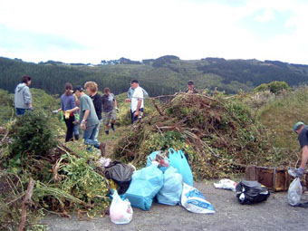

KEG supports and encourages a range of worthwhile community initiatives.
Annual membership is $20 per household and can be paid into the bank account (01-0505-0104075-01), please use your name and "subs" as references. Email the KEG Treasurer (address below) when you make the payment if you'd like an email confirmation.
KEG needs your support to work collectively for our community. Please contact Julie Haggie if you wish to volunteer, on 0274989126.
For more information on KEG please contact:
Chair:
Daniel Jones
0279444742
danieldotdot@hotmail.com
Secretary:
Julie Haggie
0274989126
Membership & Treasurer:
Jenny Black
KEG.membership@gmail.com
Volunteering:
Julie Haggie
0274989126
jujuhag@gmail.com
